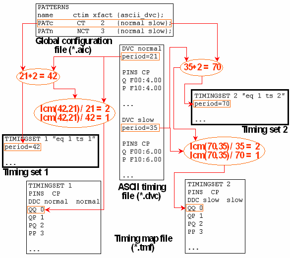
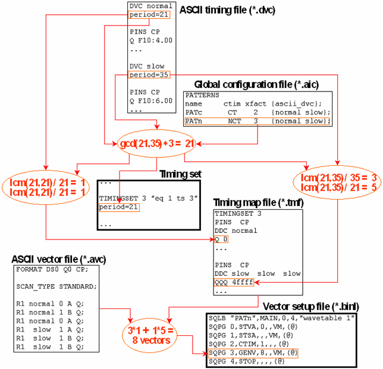

Calculating the Lengths of the State Character and the Index Sequences
The timing map file entries associate sequences of M state characters with sequences of N physical waveform DC/DC power units for a certain combination of pin and ASCII device cycle. M and N are derived from the test system cycle length m of the timing set to which the entry belongs, and from the period n of the respective ASCII device cycle by
M = lcm(m,n)/m and N = lcm(m,n)/n,
where lcm(m,n) is the least common multiple of m and n.
The simplest case is m = n = M = N = 1, where one state character will be mapped to one waveform index. M will be > 1 if the test system cycle length is the product of the ASCII period and an x-mode factor x > 1. In this case, state character sequences of length x will be mapped to one waveform index, and one ASCII vector will be converted into one row of the index array.
N will be > 1 if the test system cycle length is calculated as the greatest common divisor of different ASCII periods. For situations where this happens see the description of the ctim column in The Input Columns and Creating Sequences from Several ASCII Device Cycles.
If you combine the second and third option, a fractional x-mode results, that is, both M and N will be > 1. In this case, M ASCII vectors will be converted into N index rows, and the number of vectors specified for the associated sequencer instruction (GENV or RPTV) will be a multiple of N.
Example 1
This example shows the calculation of the sequence lengths if ctim is set to CT:

Example 2
This example shows the calculation of the sequence lengths if ctim is set to NCT:

Note that the second step of the calculation is independent of the x-mode factor specified in the global configuration file; in the example, the length of the state character sequence for normal is 1, not 3.